Okyanusların Kralı Büyük Beyaz
2014 yılında yapılan bir araştırmaya göre, büyük beyaz köpek balığı ömrünün, önceki tahminlerin çok üzerinde olarak 70 yıl veya daha uzun olduğu tahmin edilmektedir. Saatte 56 km hıza kadar yüzebilir ve 1,200 metre derinliğe dalabilirler.
 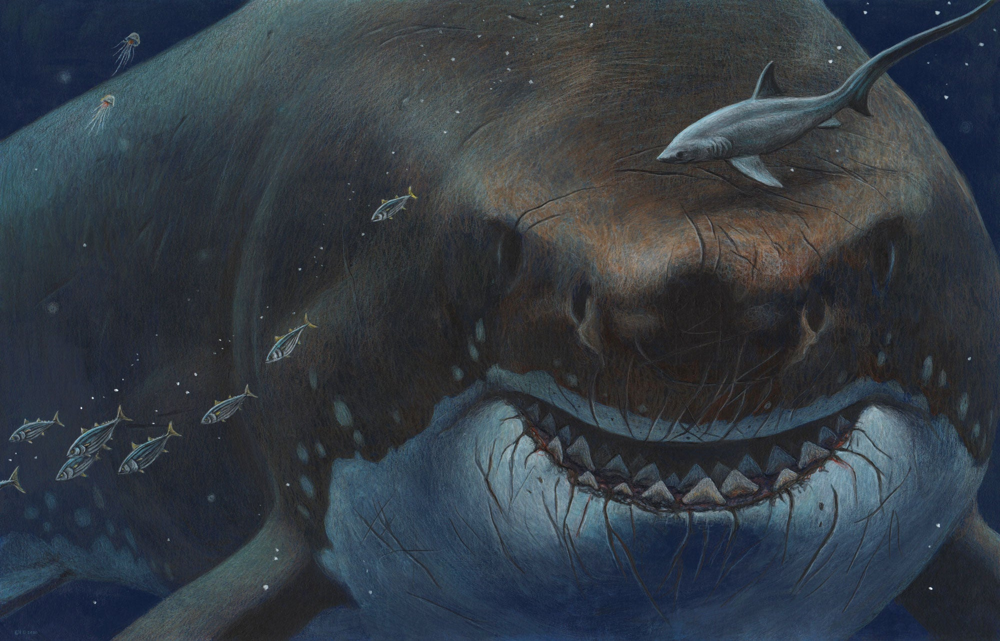
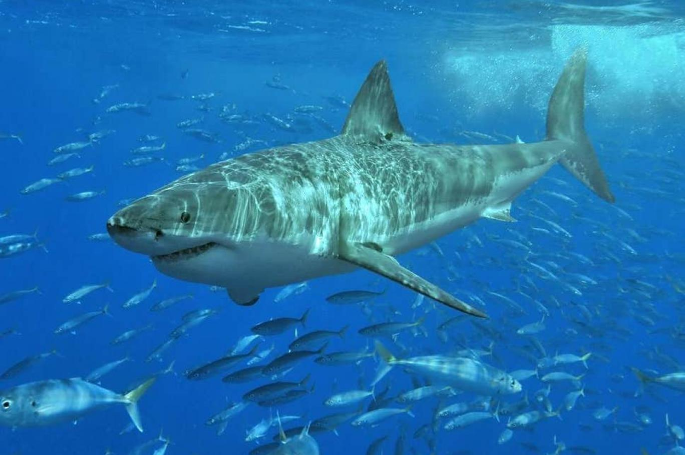
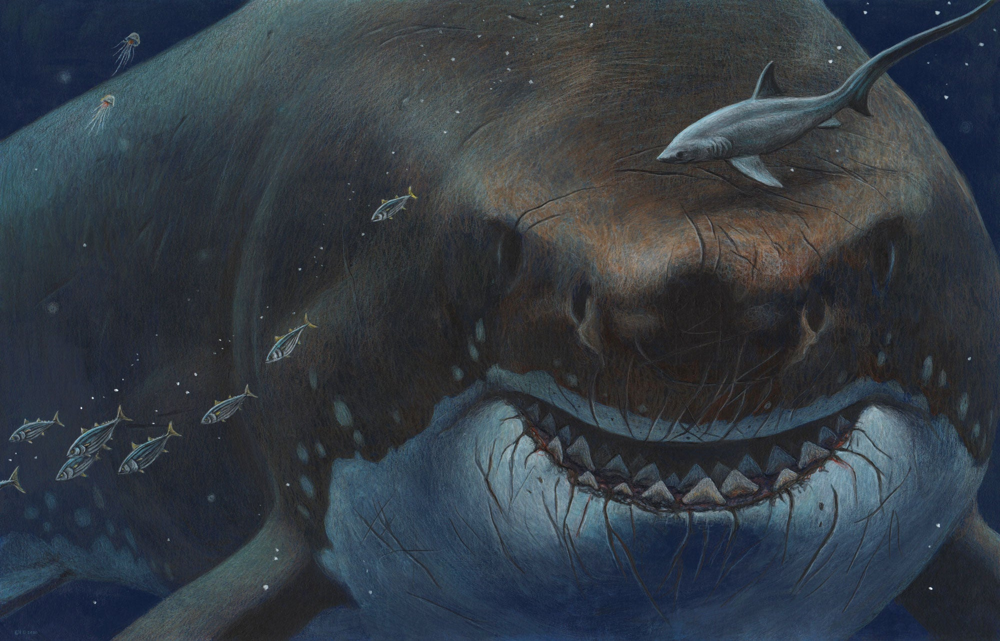
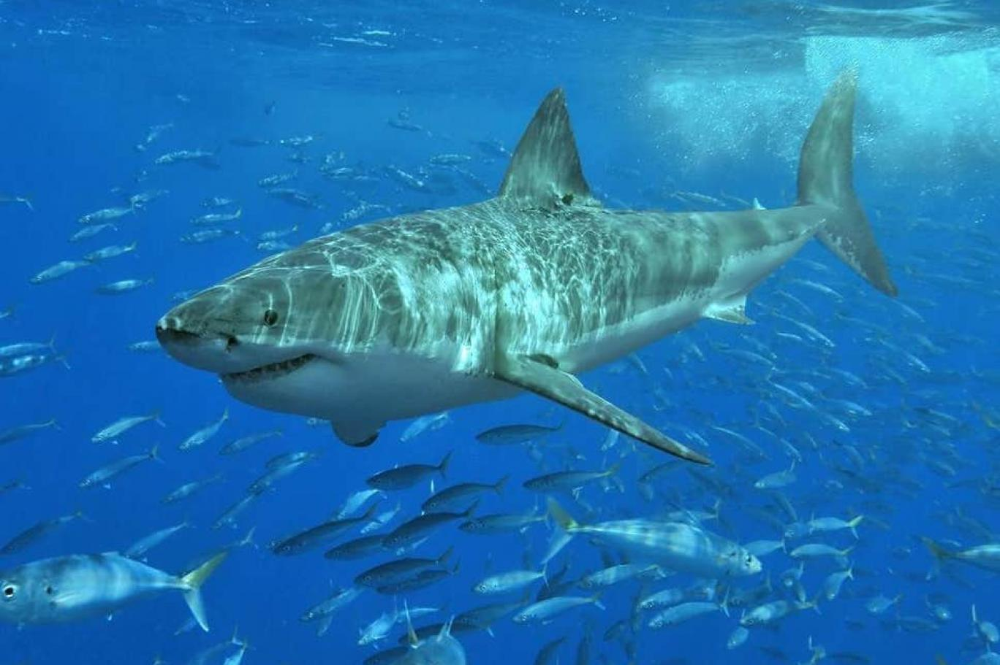
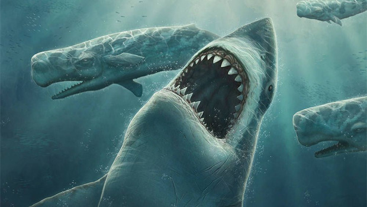 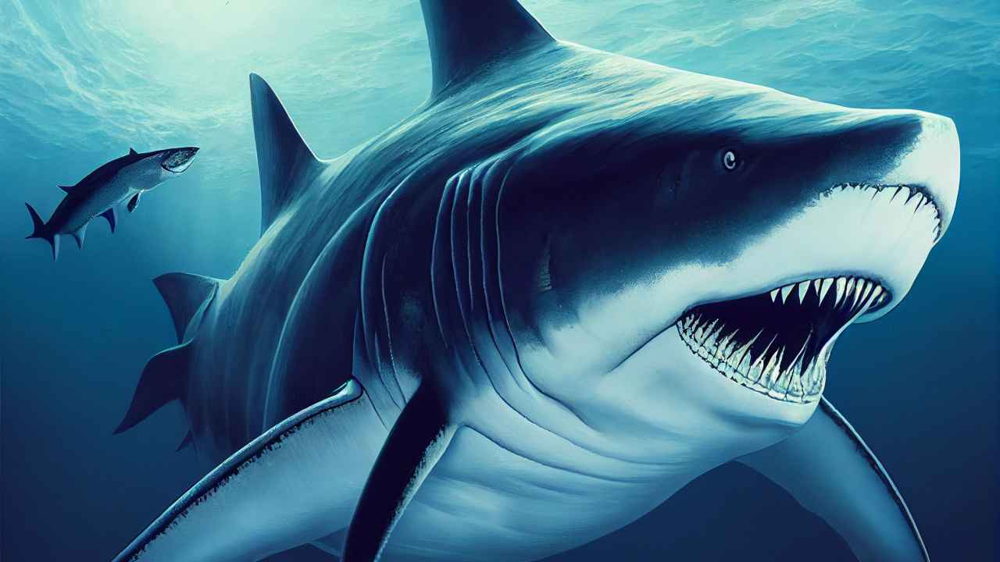 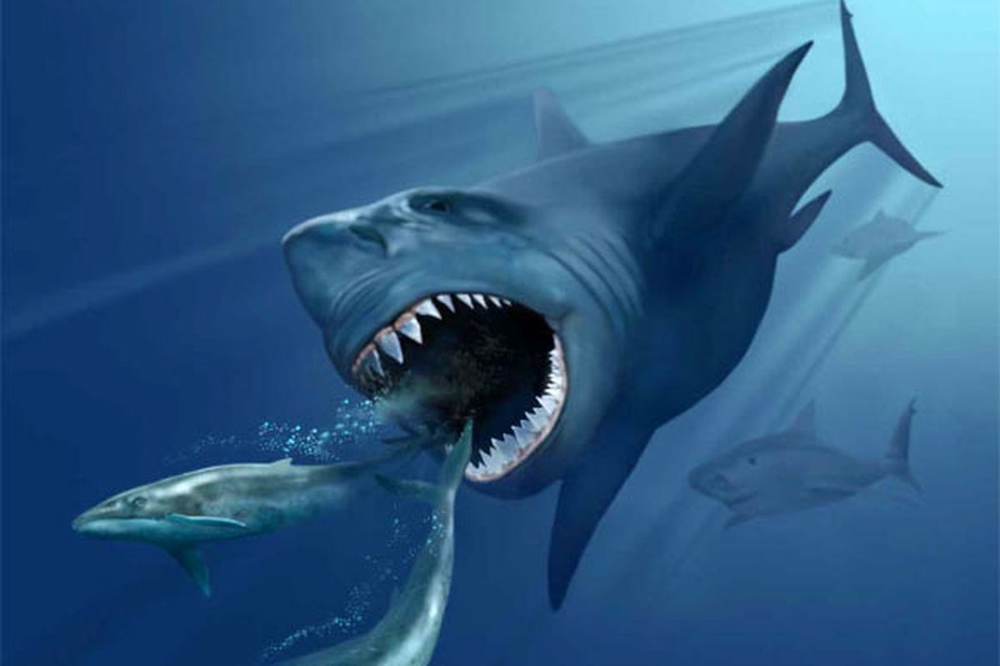
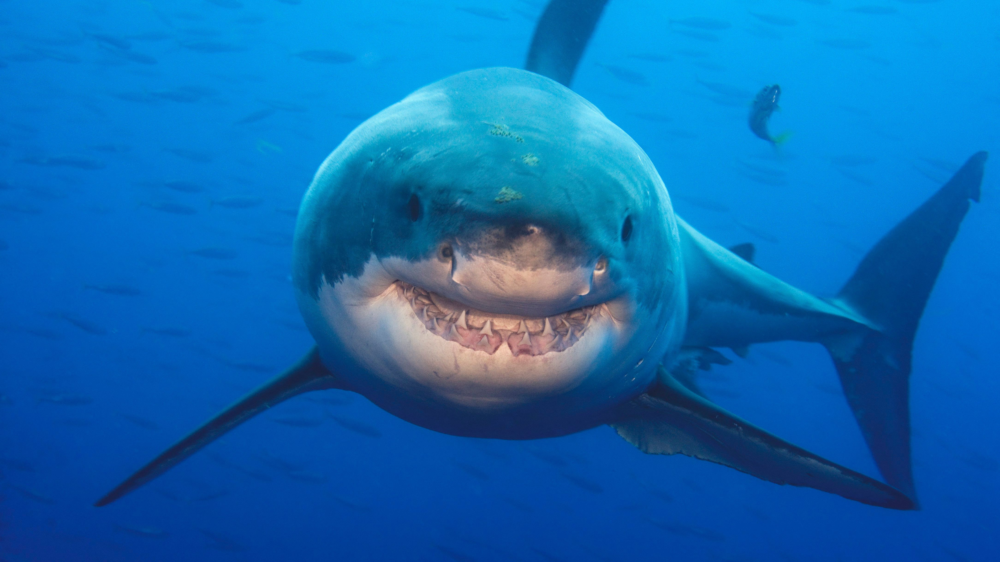 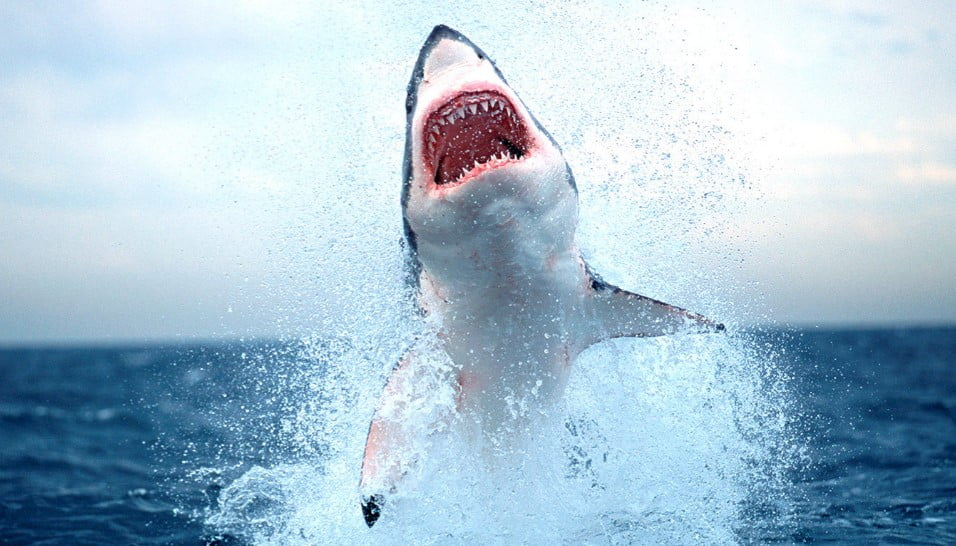 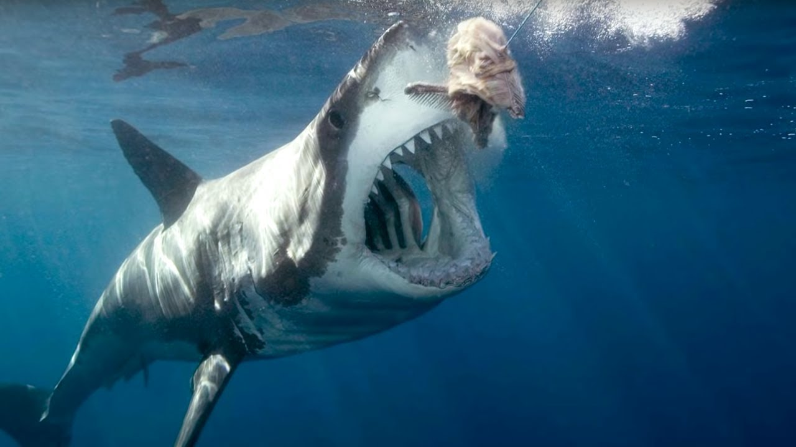
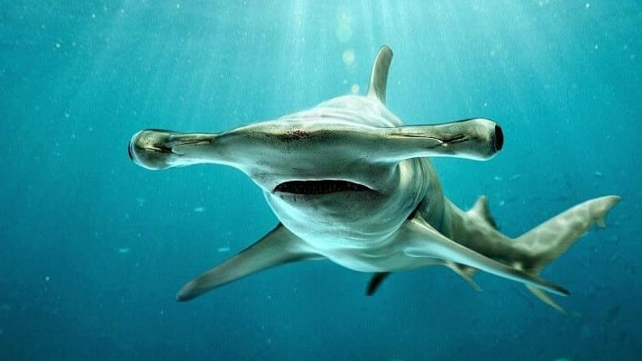 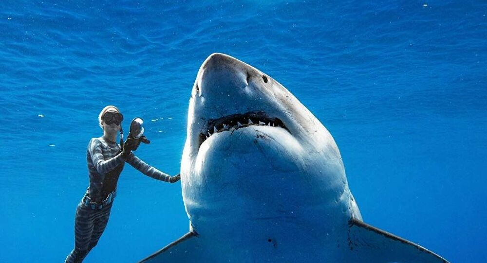 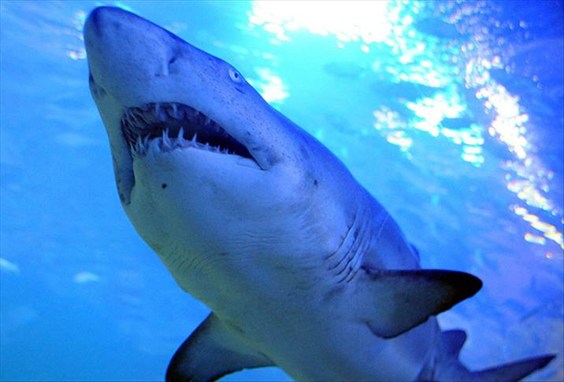